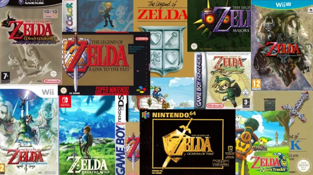

The Legend of Zelda: Skyward Sword (2011)
2011
La saga de "The Legend of Zelda" es una de las franquicias más icónicas en la historia de los videojuegos. Desde su lanzamiento en 1986, ha cautivado a millones de jugadores con su mezcla de aventura, exploración y resolución de acertijos. La historia sigue a Link, un joven héroe que debe rescatar a la Princesa Zelda y derrotar al malvado Ganon, mientras explora el vasto mundo de Hyrule y descubre secretos antiguos. Cada entrega de la serie introduce nuevos elementos de juego, mecánicas innovadoras y una narrativa rica que ha evolucionado a lo largo de los años, manteniendo siempre la esencia de la aventura y la lucha entre el bien y el mal.
